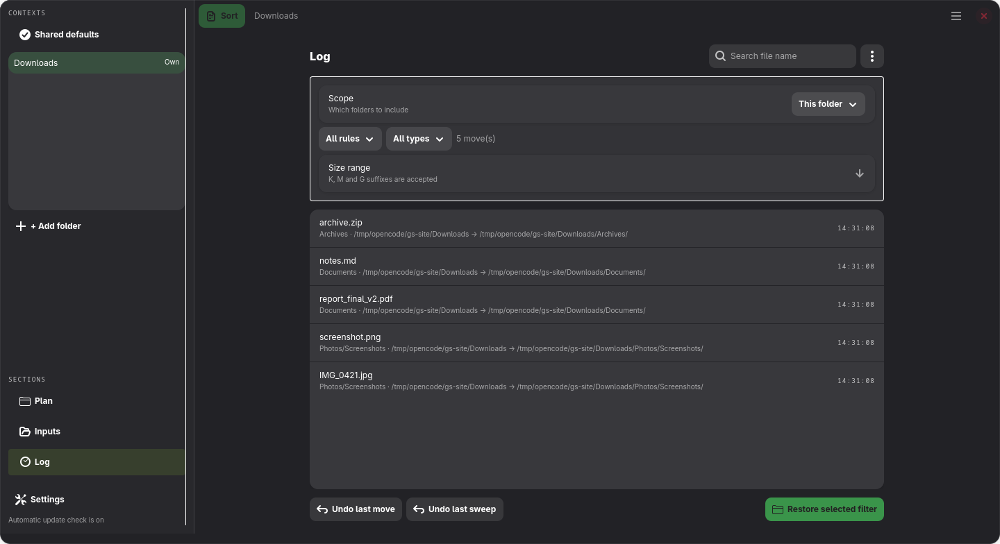
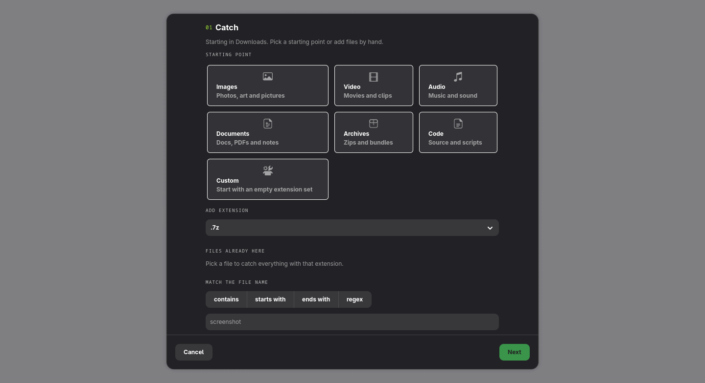

Install Funnel on Linux or Windows.
The Flatpak build is the primary Linux package. A user-local script installs under your home directory. The Windows build is a separate WinUI 3 application.
Version 3.1 is in development. Requirements and commands below match the current repository.
Linux, Flatpak.
The Flatpak build is the primary Linux package. Run these three commands in order. The first adds the project repository, the second installs the app, and the third starts it.
flatpak remote-add --if-not-exists funnel https://notmicrosoft2000-cmd.github.io/gnu-sorter/flatpak/io.neptunepc.Funnel.flatpakrepoflatpak install funnel io.neptunepc.Funnelflatpak run io.neptunepc.FunnelThe window opens on the Plan view. Add a folder under Inputs, then write a rule for it. The Flatpak ships its own GNOME runtime, so the Python and GTK4 libraries come with the package.
The Flatpak build leaves out the optional tray helper and has no built-in autostart. Start Funnel from the launcher, or run a sweep with flatpak run io.neptunepc.Funnel --sweep.
The user-local install path does not use Flatpak and installs under your home directory.
Linux, user-local install.
This path installs under your home directory and does not need root. The script downloads a copy of the repository, runs install.sh, and leaves a launcher, icons and a service unit.
curl -fsSL https://raw.githubusercontent.com/notmicrosoft2000-cmd/gnu-sorter/main/install-gnu-sorter.sh | bashcurl -fsSL https://raw.githubusercontent.com/notmicrosoft2000-cmd/gnu-sorter/main/install-gnu-sorter.sh | bash -s -- --serviceThe app goes to ~/.local/share/gnu-sorter/app/ and the CLI to ~/.local/bin/gnu-sorter. Updates run with gnu-sorter --update and removal uses ./uninstall.sh from a clone of the repository. Both are shown in section 05 with their flags.
The second form passes --service to the installer. The installer always writes the gnu-sorter.service systemd user unit; with the flag it also enables and starts that unit.
The installer needs bash and git. A desktop session with GTK4 and libadwaita is required to start the window.
Windows, WinUI 3 build.
The Windows build is a separate repository with a WinUI 3 interface. It has four areas, Folders, Rules, Activity and Settings, and the same GPL-3.0 license. The releases page lists the current executable; the repository carries the source.
Current executable and release notes. The direct link points at the latest published executable.
The latest asset named gnu-sorter-windows.exe in the Windows repository.
This page does not describe an installer for the Windows build. Check the repository's current release notes before you run it.
Requirements and verification.
The Linux source package declares Python 3.11 or newer in pyproject.toml. The Flatpak carries its own GNOME runtime. Both Linux paths need GTK4 and libadwaita at run time.
- Linux runtime
- GTK4 and libadwaita
- Python
- 3.11 or newer, as declared in pyproject.toml
- Config
- ~/.config/gnu-sorter/
- Journal
- ~/.local/share/gnu-sorter/history.log
- App files
- ~/.local/share/gnu-sorter/app/ after a user-local install
gnu-sorter --version
gnu-sorter --list-rulesInside the Flatpak, prefix a command with flatpak run io.neptunepc.Funnel. For example, flatpak run io.neptunepc.Funnel --version prints the packaged version.
Updating and removing.
A Flatpak update comes from the project repository you added in section 01. A user-local install updates from GitHub Releases.
flatpak update io.neptunepc.Funnel
flatpak uninstall io.neptunepc.Funnelgnu-sorter --update-check
gnu-sorter --update--update-check reports the newest build on the current channel. --update downloads and installs it. If the watcher service is running, the command prints the systemctl restart line to apply the update.
./uninstall.sh
./uninstall.sh --purgeRun the uninstall script from a clone of the repository. The first form keeps config and history. --purge also removes ~/.config/gnu-sorter/ and ~/.local/share/gnu-sorter/history.log.
Four screens from the Linux build.
The current GTK4 desk: Plan, Inputs and Log, plus the rule wizard. The Windows build uses WinUI 3 with its own four-area layout.




If something breaks.
The troubleshooting section covers the common failures first. If the problem is not listed there, open an issue with the version, the command you ran, and the relevant journal lines.
Read troubleshooting in the documentation, or open an issue on GitHub. Include gnu-sorter --version and the last lines of ~/.local/share/gnu-sorter/history.log when a move is involved.